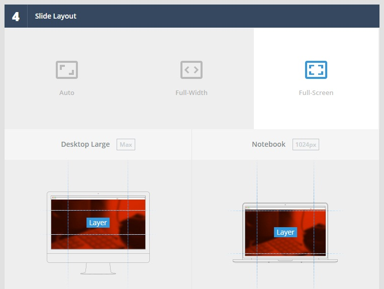

WPDance LaParis WordPress Theme
Documentation 1.0.0
- Created: 24 October 2017
- Latest Update: 24 October 2017
- By: WPDance.com
Thank you for purchasing our theme. If you have any question not included in this user guide, please open a ticket here http://codespotsupport.com/others/. Thank you so much!
We hope you will enjoy working with our themes.
Yours sincerely, WPDance.
Introduction
In this user guide, you will find all neccessary information to upload your site and make it run well: including theme installation, setup, and the way to use different post types, page templates and shortcodes.
Attention!!! Kindly note that we cannot support unless you specify your Item Purchase Code. Here's how you can get it: http://themeforest.net/forums/thread/item-purchase-code/96457.
Also note that this is combined manual for our multipurpose themes that shares similar back- and front-end features. Therefore, some screenshots, interfaces and features may be slightly different from actual theme that you’ve purchased.
Before Getting Started
Please note that it is not hard to use this theme rather than any other premium theme with advanced functions. Moreover, we believe that it’s even much easier! And there’s a good reason for that: the amount of time invested in designing its interfaces, page templates and theme options is simply immense…
Nevertheless, please note that this User Guide does NOT cover basic WordPress users. Therefore, if you are not confident of using WordPress, please get accustomed with it BEFORE taking further steps with this manual and theme!
Here are some links that will help you become more confident with WordPress:
- First Steps with WordPress (this is one of most complete guides): http://codex.wordpress.org/First_Steps_With_WordPress
- Explanations for most common WordPress terms: http://en.support.wordpress.com/lexicon/
- Best WordPress-related articles for Web Developers (from novices to guru): http://net.tutsplus.com/articles/web-roundups/top-50-wordpress-tutorials/
- More links to come later.
Seriously!!! If you do not want to spoil your experience with any Premium Theme, please get accustomed with WordPress basics first!
Requirements & Compatibility
Our themes are compatible with the WordPress versions 4.8 or later ( PHP 5.2.4 or later, and mysql 5 or later).
Most Browsers enabled with JavaScript will make them work without issues. They are designed and optimized for desktops, tablets and smartphones.
Currently we are testing themes on:
- Google Chrome (Mac and PC)
- Firefox (Mac and PC)
- Internet Explorer 9 and later
- Safari (Mac and PC)
IMPORTANT!!!
- Check to ensure that your web host has the minimum requirements to run WordPress.
- Always make sure they are running the latest version of WordPress.
- You can download the latest release of WordPress from official WordPress website
- Always create secure passwords FTP and Database.
Installation & Basic Setup
1 Install WordPress
Download and Install WordPress 4.7.4 or later.
2 Upload Theme
If you've just downloaded whole theme package (see fig. 1), unzip it. You will find the theme installation file (called like "theme_name_v.zip"), user manual, dummy content folder, license folder, folder with PSD files, etc.
Alternatively you can simply download the installation WordPress file.
You have 2 ways to upload theme:
3 Activate Theme
In "Appearance > Themes > Manage Themes > Available Themes" activate the Theme by clicking on the correspondent "Activate" link.
Attention!!! To make sure your permalinks are being rendered correctly (the web-site does not return "404 Not Found" error) after switching the theme, follow "Dashboard > Settings > Permalinks" and click "Save Changes".
After activating the Theme, you will notice Theme Options and Required Plugins (WPBakery Page Builder, Slider Revolution, WooCommerce, WD Packages, etc...) in your WordPress admin panel.
4 Cache Theme - Uploads folder
If you're using FTP client, go to "your_site/wp-content/themes/wpdancelaparis" CHMOD to 777 this folder : cache_theme. You also change CHMOD to 777 for Uploads folder.
WordPress Installation:
Follow steps below to install via WordPress
- In your WordPress Admin Panel (wp-admin) go to Appearance > Themes
- Click on Add New and press the Upload Theme button
- Navigate to find the "wpdancelaparis_rxxx.zip" file on your computer and click on "Install Now"
- Wait while the theme is uploaded and installed
- Activate the newly installed theme. Go to Appearance > Themes and activate it
- Then you will see a notification to activate the required plugins. Follow steps to install and activate. The other plugins we include are integrated into the theme and all will be ready to use.

Please note that some hostings impose restriction on size of a file that you are uploading. If any warnings appear, most probably, your hosting has limit on file size. And the theme .zip file is too large to be uploaded through WordPress Panel.
To solve this problem you should either increase your maximum upload size in your hosting admin panel or try to contact your hosting provider to enable it for you if you do not have right to alter your server php settings. This is a very common request and they should be able to help you out. Once the limit is increased, you can re-try to install and you’ll go ahead well.
Also, you can install the theme via FTP.
FTP Installation:
Otherwise you can install theme via FTP. Simply unzip the installable file and upload the theme folder via FTP to "your_site/wp-content/themes/".
- Log into your hosting space via an FTP software
- Unzip the wpdancelaparis_rxxx.zip file and ONLY use the extracted wpdancelaparis theme folder
- Upload theme folder extracted "WPDanceLaParis" to wp-content > themes folder
- Activate the newly installed theme. Go to Appearance > Themes and activate it
- Then you will get a notification to activate the required plugins. Follow these steps to install and activate. The other plugins included are integrated in the theme and they will be ready to use.
Attention!!! Theme will work well on the vast majority of correctly installed and configured WordPress sites without any additional settings. However, on some (very few) hosting configurations you can notice that images on your site are not displayed. If you are experiencing this issue, please follow these steps to fix it:
- Make sure that theme installed strictly to "your_site/wp-content/themes/" folder.
- The folder "your_site/wp-content/uploads" must be created. On some hostings you'll need to set its CHMOD to 755, on others – to 777.
If above steps did not yield any result, please don’t hesitate to address this issue directly by asking your hosting company. Since this is the common server-related problem, we will not be able to help you!
How To Update The Theme:
You can update your theme via FTP or via WordPress. Read the information below for each method. However, the first thing you need to do is download the new theme files from Themeforest.
First, Download New Theme Files From Themeforest
- Log into your Themeforest account and navigate to your downloads tab. Find the "WPDanceLaParis" theme purchase.
- Click on the "download" button next to it and choose to download the "Installable WordPress Theme" which is just the WordPress file, or choose the "Main Files", the entire package of everything.
- Then you need to decide if you want to install the update via FTP or via WordPress. Directions for both methods are mentioned below.
How To Update Your Theme Via FTP
- Go to "wp-content > themes" location and backup your "WPDanceLaParis" theme folder by saving it to your computer, or you can choose to simply delete it. Your content will not be lost.
- Retrieve the "wpdancelaparis_rxxx.zip" file from your new Themeforest download and extract the file to get the "WPDanceLaParis" theme folder.
- Then simply drag and drop the new "WPDanceLaParis" theme folder into "wp-content > themes" location. Choose to "Replace" the current one if you did not delete it.
How To Update Your Theme Via WordPress
- You need to deactivate the current "WPDanceLaParis" theme in section "appearance > themes" by simply activating a different theme. Once you activate a different theme, you can delete the "WPDanceLaParis" theme. Don't worry, your content will not be lost.
- Retrieve the "wpdancelaparis_rxxx.zip" file from your new Themeforest download. If you downloaded the "Main Files" from Themeforest, then you'll need to unzip the archive file you received, the wpdancelaparis_rxxx.zip will be located in that folder.
- Then simply upload the "wpdancelaparis_rxxx.zip" file in the "appearance > themes" section. Click on the "Install Themes" tab at the top and choose to upload the zip file.
- Once it is uploaded, choose to activate it. You’re done!
Important Backup Information
Whenever you update the theme, a good idea is to backup your current theme folder. Log into your server and make a copy of the "WPDanceLaParis" theme folder located at wp-content > themes. If you are using the Revolution Slider and added custom css, please make a backup of styles because those will be removed when you update. You can also backup your theme options on the backup tab in Appearance > Theme Options.
Non-Production Environment
We notice you should use this environment to test. If there is no problem, you can tranfer to live site.
Import Dummy Data
Please follow the instructions below to import sample data:
Step 1: Install & Active all Plugins Requirement
1Click Button Begin Installing Plugins Required
2 Check all plugins > select option Install > Click button Apply
3Install all plugins Success
4Check all plugins > select option Active > Click button Apply
To avoid this error, you should activate the following plugins before activating other plugins: Woocommerce, WPBakery Page Builder (Visual Composer), WD Packages
5Active all plugins success
Step 2: Import Slider data
1Go to Revolution Slider > Click Import Slider
2Choose one by one slider data sample in folder documentation/slider-demo
3Import slider successful

Step 3: Import sample-data.xml file
1In order to import demo content file, follow Tools > Import > install and active a plugin Import Wordpress > Run Importer"
2Click on "Browse" button and select the demo XML file ( "sample-data.xml" ) in folder documentation/sample-data, then press "Upload file and import" button.
It can take a few minutes to complete. if it has timeout error please increase PHP timeout. Please don't close your browser while importing
Step 4: Import sample-widget.wie file
1Install and Active the Plugin Widget Importer & Exporter
2Chose Tab Widget Importer & Exporter > Click on "Browse" button and select the demo XML file ( "sample-data.wie" ) in folder documentation/sample-data, then press "Import Widgets" button.
Step 5: Setting Front page displays
After import dummy data completed. You can go to Setting > Reading > Setting Front Page Displays > Select A Statis Page > Select the homepage that you want to set for front page
Header
The header is probably one of the first things. The header contains many things above and the menu. There are many different elements in the header and many ways to customize it, including images, colors, content, design and more.
Create Header Template
To use Page Buider Mode & shortcodes for creating layout headers, you need to enable the WPBakery Page Builder plugin and click here for setup instructions.
1 Go to Headers HTML > Add New.
2 Custom content for header template
- (1) Enter a title for Header
- (2) Click "BACK END EDITOR" Mode.
- (3) Select header thumbnail.
- (4) Press Public button to complete.
Set Global Header
The first time you activate a theme, you will use the default header template. Of course you can change it flexibly by creating a Header Template, then customize as follows:
I. THEME OPTION MODE
Go to Theme Option > Header > Select the header template > Save Changes.
II. CUSTOMIZE MODE
1 Go to Appearance > Customize.
2 Select the WPDANCE - Header on the left menu.
3 Select Header Template > Click Save & Publish to finish
Header displayed in frontend:
Pages
You can create unlimited number of pages with content. "WPDanceLaParis" includes several page templates to choose from, and you will need to choose the page template that suits your needs
Page Shortcode Templates
You can quickly build a home page by using one of available layouts you see in the theme demo.
To ensure flexibility, all pages are built by using one of the available page templates in combination with shortcodes, which is available on this page, for each homepage version. Take the following steps to create a new home page.
- Navigate to Pages > Add New.
- Copy the text combination associated with your chosen home page version and paste it to your newly created page.
- Next click on the TEXT tab (not the VISUAL tab) and paste the content into the field. Publish the page and you're done!
Homepage Shortcode
About Page Shortcode
Contact Page Shortcode
Create A New Page
For sites that use WooCommerce, Shop, Products... shortcode, you will need to choose the appropriate page template (Woocommerce Template). This will help the content can be displayed accurately and fully.
- Navigate to Pages and click Add New
- Input a new name for your page, then find the Page Attributes box on right side
- Set your Parent page; it's usually set to No Parent
- Set your template from the dropdown list. See list of page templates below
- Select page options in the Page Configuration box. See the Page Options section of this document
- Content of your page goes in the editing field, use the Visual or Text editor. Page content is mainly built by using Shortcodes and WPBakery Page Builder, see the Shortcodes section for how to use them. You can also use our demo content, see the Homepage Templates section of this document for the demo code of each home page
Setting Up HomePage
- Navigate to the "WP-admin > Settings > Reading" interface.
- In the section "Front page displays", choose "static page (select below)" radio-button.
- In the "Front page:" selector choose the page created as Homepage.
- Optional. Also you can choose which page will display your blog posts in the "Posts page". But, you should use Blog Template to display your blog posts, it will be better.
Blog
"WPDanceLaParis" contains powerful options for the blog. It offers many different options for you to present your blog posts, along with several different blog layouts. In addition, there are numerous theme options and shortcodes that allow you to customize how posts are displayed. There are 2 ways to display your blog posts. The following sections will cover each method.
- Assign Blog Page
- Use Blog Template
First, you need to know how to add new blog post. See the section below.
Creating Blog Posts
No matter what sorts of method you'll use to display your blog posts, the first thing needed is to create the blog posts. See information on how to create blog posts below:
Follow the Steps Below To Create A Blog Post
- Navigate to Posts in your WordPress admin
- Click on Add New to make a new post. Create a title and insert your post content in the editing field. You can use any of our shortcode builder elements inside the post
- Add Categories from the right side. To assign it to the post, check the box next to the Category name
- Add Tags from the right side. Type the name of the tag in the field, separate multiple tags with commas
- For a single image, click the first Featured Image box, select an image and click "Set Featured Image"
- Once you are finished, click on Publish to save the post
Assigned Blog Page
The first blog method covered is the standard WordPress method in order to set up an assigned blog or "post" page. It's as simple as creating a new page, and then telling WordPress to use that page as the post page.
Follow These Steps Below To Assign A Post Page
- Navigate to Pages and click Add New
- Write a new name for your page
- Click on Publish to save the page
- To set the page as your post page, navigate to Settings > Reading and select your blog page name for the Posts Page. These actions will automatically pull your blog posts and place them on the page
Blog Template
The second method covered is our template. It's as simple as making a new page, select a page template from a list of templates
Follow These Steps Below To Assign A Post Page
- Navigate to Pages and click Add New
- Input a new name for your page, then find the Page Attributes box on right side
- Select the Default Template page template from the dropdown list
- Click Publish to save the page
What is: Widgets
A WordPress Widget is a small block that performs a specific function. You can add these widgets in sidebars also known as widget-ready areas on your web page.
WordPress widgets were originally created to provide a simple and easy-to-use way of giving design and structure control of the WordPress theme to the user. Widgets can be easily dragged and dropped into a specific widget area. You can find the list of available widgets and widget areas by going to the Appearance » Widgets section in your WordPress dashboard. (wpbeginner.com)
Custom Page/Post/Product Layout
Each Page/Post/Product you create has a full set of options to customize each individual page. Each page opened in your WordPress admin will have a "Page Configuration" / "Post Configuration" / "Product Configuration" Box with all the different settings in it. Some settings will work only if you use a specific template. Below are screenshots of the Page Configuration box.
The list of attributes is customizable:
- Custom Header
- Custom Footer
- Page Layout
- Breadcrumb Style
- Image Breadcrumb
Theme Option Mode
To configure, go to "Theme Option" menu on the left sidebar.
- Genenal: Config logo, favicon, background body
- Accessibility: Config Breadcrumb, Back To Top button, social share.
- Header: Config header template and default header.
- Footer: Config footer template and default footer.
- Comments: Config wordpress comment, facebook comment.
- Blog Settings: Config Blog layout, blog archive, single blog, blog page default.
- Page Settings: Config page default, 404 page, search page.
- Woocommerce: Config product layout, product archive, single product, woocommerce page template, cart page custom content, mini cart icon, product sale flash.
- Color Setting: Config colors on theme.
- Font Setting: Config font family on theme.
- Custom Css/Script: Customize theme theme in Css / Script (Only for those who have knowledge of web programming)
Customize Mode
To configure the theme, go to Appearance > Customize. Almost everything you can customize is here.
- WPDANCE - Theme Option: Config Breadcrumb, Back To Top Button.
- WPDANCE - Header: Config Logo Site, Header Template.
- WPDANCE - Footer: Config Footer Template.
- WPDANCE - Layout Setting: Config Page, Blog, Archive, Single, Woocommerce Template Layout.
- WPDANCE - Product Config: Config Product, Archive Product, Single Product, Cart Page Layout.
- WPDANCE - Color Setting: Config colors on theme.
- WPDANCE - Font Setting: Config font family on theme.
WD Packages
WD Packages plugin supports a lot of special functions for website. With the WD Packages, you can easily turn off page extensions through the management page.
Package Setting
Go to the "WD Packages" menu on the left sidebar. Set options in the form then press "SAVE PARKAGES SETTINGS" to complete.
Theme Manager Mode
Theme Manager Mode allows users to select content customization mode with "Theme Option" or "Customize". For the "WPDanceLaParis" theme, we encourage using the "Theme Option" for more optimized customizations.
WD Shortcode
To Use The Shortcode Generator, Follow The Steps Below
- Open a page or post and go to the WPBakery Page Builder editor
- Click on Add New Element button
- In the popup window, select "WPDance Shortcode" tab
- Select an element from list
There are too many shortcodes to take a look in this document. Please take some times and navigate to each menu item.
WD Widgets
To Use The "WD Widgets", Drag and drop as regular widgets.
Contact Form 7
Good News for those who is familiar with great plugin Contact form 7 : We covered all styles required to build your forms without worrying about its appearance. You don't need to do anything, intalling Contact Form 7 and "WPDanceLaParis" will take over the rest. We will dequeue its styles and add our own customised version to make it work seamlessly with "WPDanceLaParis".
If you are not familiair with this plugin, check out resources below
Contact Form 7 Plugin pageContact Form 7 Documentation
Please be informed that we do not give support to questions and issues of any third party plugin. We are only willing to answer simple usage questions or issues related to incompatibility with the theme. Exception is made only for our supported Plugins (Revolution slider, Contact form 7, bbPress and Woocommerce).
Slider Revolution
Admitedly, everyone loves sliders. This is the perfect way to catch your viewers' attention by displaying your important content. Scarlett includes the Revolution Slider. We also include other slider types for pages/posts and carousels. Each slider can be used on any page or post. When you install the theme, you need to intall the Revolution Slider plugin and you and will be able to access to the sidebar of your wordpress admin. The Revolution Slider is one standalone plugin activated via TGM plugin activation, please install and activate it. Each slider is different and contains various features. The following sections will cover several different sections of the slider listed as belows:
Create New Project
"WPDanceLaParis" includes the popular Revolution Slider Created By ThemePunch. This slider is a beautifully animated slider and 100% responsive with amazing options. We cannot cover everything here but we outline how to setup a slider and how to add slides to it. If you download our main files from Themeforest, you will get the original documentation created by ThemePunch, which is located in the slider-revolution-documentation folder.
Create A New Revolution Slider, Follow The Steps Below
- Click on the Revolution Slider sidebar item in your admin section, then click the Create New Slider button
- Insert a slider name and alias. The alias text will generate a shortcode that can be used in the editing field of pages or posts.
- Then select the Source Type. If you choose Posts or Specific Posts, please refer to the Revolution Slider Docs for information on how to set that up. Our demos use Gallery.
- Then select the Slider Layout type, each type will have its own settings. Set the Auto Responsive settings here also. View the layout example diagram below this area to understand what each section includes.

- Once you are done, click Create Slider and your new slider will be made.
On the right hand side are many other options you can set. All are self explanatory with descriptions. Test them out.
Add Slide To Project
- Click the Edit Slides button in the Revolution Slider settings.
- Click the Add Slide button.
- When done, you will see a new slide box. This is where you add all content of your slide.
- Edition for slider has many different sections that allow you to customize it. We cannot cover them all, but please do check out each one.
- To add a text layer, click on the "Add Layer" button below the slider preview window. Enter your text in the Text/HTML field shown in the Layer General Parameter box. To style it, select one of the styles from the dropdown or make your own by clicking "Edit Style".
- To add an image or video, click on the "Add Layer: Image" or "Add Layer: Video".
- Below the slide preview box on the left hand side are 3 sections: Layer Parameters, Layer Animations, Layer Links & Advanced Parameters. Select the settings you wish to have, and click on Preview Slide to preview what will appear.
- On the right hand side below the slider preview box, there is the Layers Timing & Sorting box where you set the time it takes for each layer to show on the screen.
- When you finish, click on Update Slide to save it. Repeat process for other slides.
Import Demo Sliders
Our Document includes the sample sliders from the Revolution Slider. It also contains our demo sliders (slider-demo folder). Please read each section carefully. Each slider has its own method to import, see each one below.
How To Export/Import Your Revolution Sliders
The Revolution Slider allows you to easily export/import your slides. It's always a good idea to backup your slides so you can easily import them again. Creating animated slides takes a lot of time, make sure you export the data so you don't ever lose the time spent on them. The Revolution Slider requires you to export each slider individually. Export each slide made and it will give you an individual zip file of all the necessary files.
How To Export Revolution Sliders – Open the Revolution Slider page and find the import/export section below the main settings. Click on the "Export" button and you will receive a zip file of all the needed files in that.
How To Import Revolution Sliders – Firstly, you must create a new slider. Next find the import/export section below the main slider settings. Click on "Choose File" button and select your zip file then click on "Import".
WPBakery Page Builder
WPBakery Page Builder is the generator for visual shortcode that you can use to build your layout painlessly without wasting time on writing shortcodes. We built WPBakery Page Builder based on Famous plugin called WPBakery Page Builder by wpbakery. There's one concept/design pattern you should know. In the WPBakery Page Builder editor mode, you'll see "Add element" button, which you should click on or drag to the working canvas, to add content block or row to your page. Clicking on the "Add element" button will show the menu to select content element. Content blocks are divided into categories so that you can filter. Alternatively, you can type the shortcode name to filter down the items instead of search them visually.
Basic Knowledge
It has very simple and intuitive interface, but before starting to build layouts, you need to get accustomed with WPBakery Page Builder documentation: http://kb.wpbakery.com/index.php?title=Visual_Composer.
You can control global settings of WPBakery Page Builder such as disable/enable in a post type and user roles that can use a shortcode. You can find these settings from WordPress "WP-admin > Settings > WPBakery Page Builder".
General Settings:
- Content types: This option allows you to choose post type to have the WPBakery Page Builder feature. Please note that only post types will have this feature that they have WP editor feature. For example, clients will not have WPBakery Page Builder even if you check mark its post type.
- Rules for user groups access : This option will give you the ability to select which shortcode should be appeared in the specific user role. It is useful when you give subscribers the ability to post, so you can disable some shortcodes for them.
- Display reponsive content elements: Check this checkbox to prevent content elements from "stacking" one on top other (on small media screens, eg. mobile).
- Google font subsets: Choose which subsets you want to load for your Custom Heading Element. Take into account that each subset will have impact on page loading.
Product License:
This options allow you to make update the plugin automatically.
My shortcodes:
This tab allows you to map your shortcode. Your shortcode will be shown on the list of WPBakery Page Builder elements menu.
To start creating new layout click "BACKEND EDITOR" button on the top left of WYSIWYG (text editor):
WYSIWYG editor change to WPBakery Page Builder canvas. You can work with it as you do with regular WPBakery Page Builder.
If you have a notice of WPBakery Page Builder about the license, you will do nothing. Because we bought this plugin and included it in the theme package. Also you can't enable function for automatic updates of this plugin. But you can use it normally. If it has new version, we will update it for you.
Role Manager
Set the role for WPBakery Page Builder Plugin to use page buider mode on custom post types!
1 Go to "WPBakery Page Builder Menu > Role Manager".
2 Select the post type in "Post types" to activate. For the WPDANCE Team theme, activating the two post types "wpdance_header" and "wpdance_footer" is very important.
Background Section
Row element allows you to add your content. To add row, you click "Add new element" button, then select Row element from the list.
WPBakery Page Builder allows you to setting up the row with many options.
Row editing interface will be displayed. Additionally, you can configure stripe with custom background, paddings, margins, etc.
Column - Element
Rows are used to divide your page into the logic blocks with columns, columns later will hold your content blocks. To divide columns, you hover on Column button and select layout you want to show. Then, click Add New Element button in column section to add new element for column
Translation
"WPDanceLaParis" theme is ready to translate. You can use PO file to do it. There are 2 methods to do:
- Use Poedit program and follow this document.
- Use Codestyling Localization plugin.
After translating, you need to config wordpress language.
WPML Plugin
We have tested and ensured that "WPDanceLaParis" is WPML compatible. If you need a multi-language site, then we recommend using the WPML Plugin. You would need to buy a license for the plugin, then install it and set it up. All the information you need to get started and use it is on the WPML.org page. Below are all the resource links you will need.
"WPDanceLaParis" is, in their words, incredibly responsive, with a refreshingly clean design. And it has some awesome features, premium sliders, unlimited colors, advanced theme options and much more! If you selected "WPDanceLaParis" as your site’s theme, we’ll guide you in this tutorial how to turn it multilingual with WPML.
What you'll need:
- The "WPDanceLaParis" theme, also available from Themeforest.
- A recent version of WPML, including the String Translation and Translation Management modules.
Click on the links to jump WPML Documentation
Translating Widgets
Tutorial recommended by wpml team for translating widgets http://wpml.org/2011/03/howto-display-different-widgets-per-language/